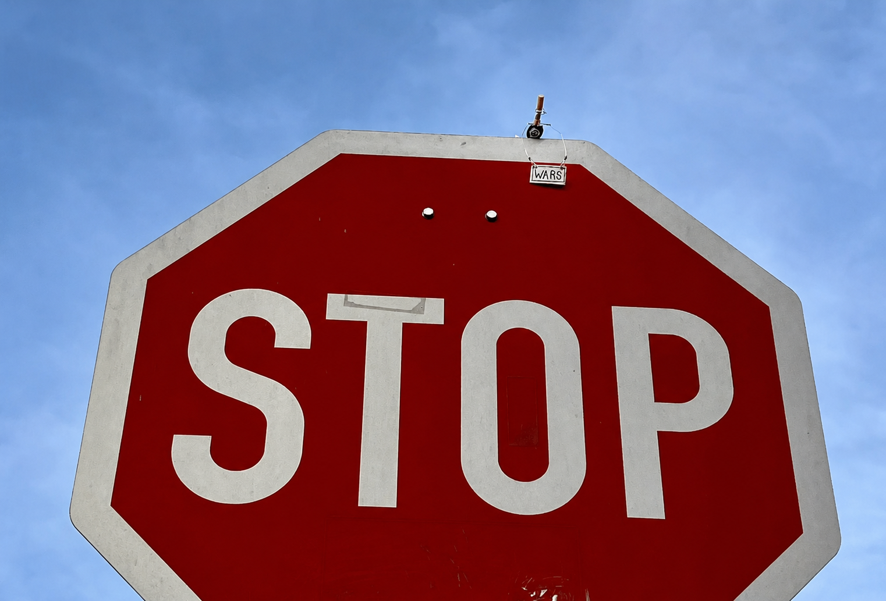
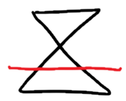
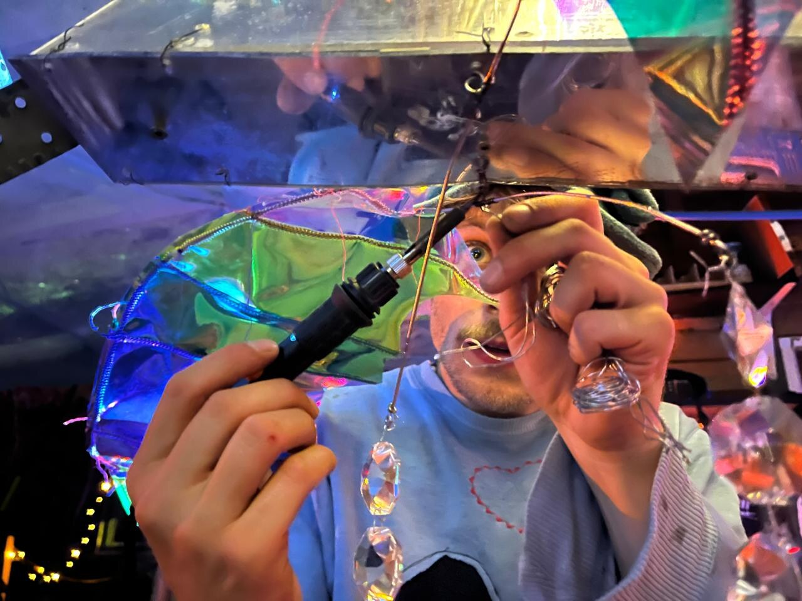
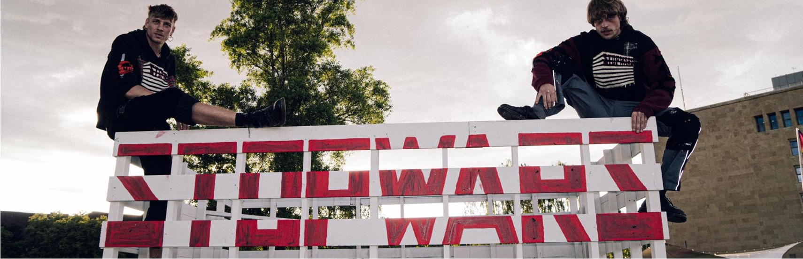
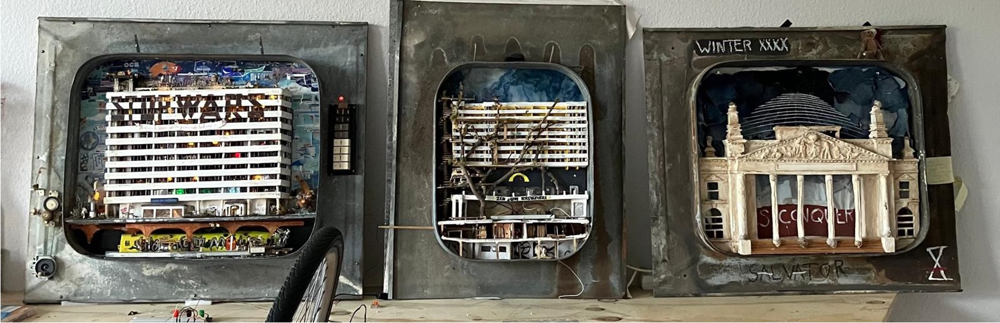
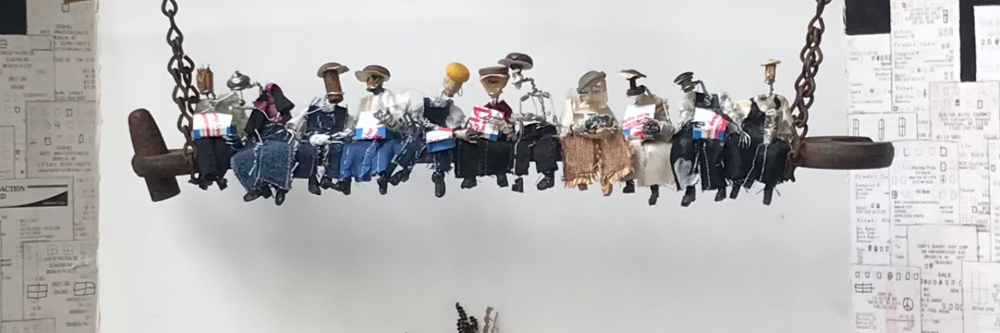

Peaceful Demonstrator Study
Small silent demonstrators investigate how paradoxical civic messages capture attention and open reflection in everyday public space.
Explore the research ↗
Empirical aesthetics · Cognitive psychology · Artistic intervention

Tobias Eder is a Scientific Artivist and Empirical Aesthetics Researcher.
He builds artistic interventions as experimental paradigms to study how people attend, feel, interpret, and act.
01

Small silent demonstrators investigate how paradoxical civic messages capture attention and open reflection in everyday public space.
Explore the research ↗A mobile sculpture powered by its visitors connects physical reflection, personal effort, and the possibility of sustainable change.
Explore the proposal ↗
The collective website gathers ALLESANDERSSTADT, WaMüLage, clothing, material transformation, and the shared question: “What is rubbish?”

Six discarded Berlin rooftop windows become portals into a city built from below. Insects, transformed cigarettes, art, culture, and returning nature slowly remake the city together.

Lunch Atop a Skyscraper, Jack of All Trades, Vinyl Creatures, and Galactic Garden show the material language that led toward the current practice.
02
My research investigates how aesthetic experiences shape attention, embodiment, meaning-making, reflection, and behaviour. I use artistic interventions because they create rich, controlled situations that extend beyond conventional laboratory stimuli.
03
A short interview film with Tobias Eder from an earlier phase of the practice. It gives a direct feeling for the material language, the humour, and the way discarded objects become characters, questions, and small worlds.
04

A Berlin based Scientific Artivist and Empirical Aesthetics Researcher.
His work uses sculpture, participatory installation, and public intervention as research instruments. By creating aesthetic encounters with real material, social, and bodily stakes, he investigates the mechanisms through which attention, agency, and personal meaning emerge.
Current projects are research proposals in development, designed to invite collaboration with laboratories, universities, and institutional partners.
View CV & research profile ↗